Chapter 8
Arrays and Array Lists
Chapter Goals
- To become familiar with using arrays and array lists
- To learn about wrapper classes, auto-boxing and the generalized
for loop
- To study common array algorithms
- To learn how to use two-dimensional arrays
- To understand when to choose array lists and arrays in your
programs
- To implement partially filled arrays
Arrays
- Array: Sequence of values of the same type
- Construct array:
new double[10]
- Store in variable of type double[]
double[] data = new double[10];
- When array is created, all values are initialized depending on array
type:
- Numbers: 0
- Boolean: false
- Object References: null
Arrays
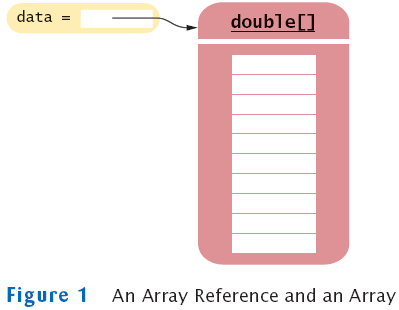
Arrays
- Use [] to access an element
data[2] = 29.95;
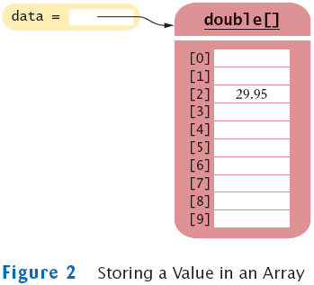
Arrays
- Using the value stored:
System.out.println("The value of this data item is " +
data[4]);
- Get array length as data.length. (Not a method!)
- Index values range from 0 to length - 1
- Accessing a nonexistent element results in a bounds error
double[] data = new double[10];
data[10] = 29.95; // ERROR
- Limitation: Arrays have fixed length
Syntax 8.1: Array Construction
Example:
Purpose:
To construct an array with a given number of elements |
Syntax 8.2: Array Element Access
Example:
Purpose:
To access an element in an array |
Self Check
- What elements does the data array contain after the following
statements?
double[] data = new double[10];
for (int i = 0; i < data.length; i++) data[i] = i * i;
- What do the following program segments print? Or, if there is an error,
describe the error and specify whether it is detected at compile-time or
at run-time.
- double[] a = new double[10];
System.out.println(a[0]);
- double[] b = new double[10];
System.out.println(b[10]);
- double[] c;
System.out.println(c[0]);
Answers
- 0, 1, 4, 9, 16, 25, 36, 49, 64, 81, but not 100
- 0
- a run-time error: array index out of bounds
- a compile-time error: c is not initialized
Array Lists
Retrieving Array List Elements
Adding Elements
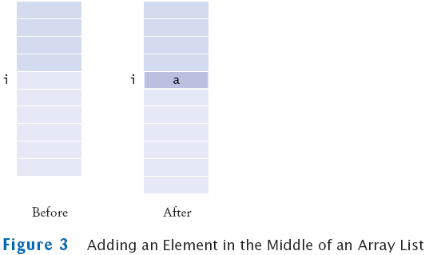
Removing Elements
- remove removes an element at an index
accounts.remove(i)
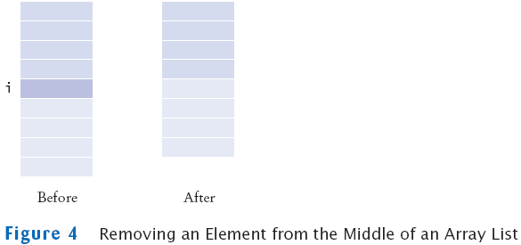
File ArrayListTester.java
File BankAccount.java
Output
size=3
first account number=1008
last account number=1729
Self Check
- How do you construct an array of 10 strings? An array list of
strings?
- What is the content of names after the following statements?
ArrayList<String> names = new ArrayList<String>();
names.add("A");
names.add(0, "B");
names.add("C");
names.remove(1);
Answers
new String[10];
new ArrayList<String>();
- names contains the strings "B" and "C" at
positions 0 and 1
Wrappers
Wrappers
- There are wrapper classes for all eight primitive types:
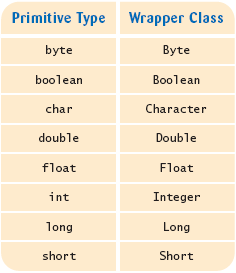
Auto-boxing
Self Check
- What is the difference between the types double and
Double?
- Suppose data is an ArrayList<Double> of size
> 0. How do you increment the element with index 0?
Answers
- double is one of the eight primitive types.
Double is a class type.
- data.set(0, data.get(0) + 1);
The Generalized for Loop
- Traverses all elements of a collection:
double[] data = . . .;
double sum = 0;
for (double e : data) // You should read this loop as "for each e in data"
{
sum = sum + e;
}
- Traditional alternative:
double[] data = . . .;
double sum = 0;
for (int i = 0; i < data.length; i++)
{
double e = data[i];
sum = sum + e;
}
The Generalized for Loop
- Works for ArrayLists too:
ArrayList<BankAccount> accounts = . . . ;
double sum = 0;
for (BankAccount a : accounts)
{
sum = sum + a.getBalance();
}
- Equivalent to the following ordinary for loop:
double sum = 0;
for (int i = 0; i < accounts.size(); i++)
{
BankAccount a = accounts.get(i);
sum = sum + a.getBalance();
}
Syntax 8.3: The "for each" Loop
| |
for (Type variable : collection)
statement
|
Example:
| |
for (double e : data)
sum = sum + e;
|
Purpose:
To execute a loop for each element in the collection. In each
iteration, the variable is assigned the next element of the
collection. Then the statement is executed. |
Self Check
- Write a "for each" loop that prints all elements in the array
data
- Why is the "for each" loop not an appropriate shortcut for the
following ordinary for loop?
for (int i = 0; i < data.length; i++) data[i] = i * i;
Answers
- for (double x : data) System.out.println(x);
- The loop writes a value into data[i]. The "for each" loop does
not have the index variable i.
Simple Array Algorithms: Counting Matches
Check all elements and count the matches until you reach the end of the
array list.
public class Bank
{
public int count(double atLeast)
{
int matches = 0;
for (BankAccount a : accounts)
{
if (a.getBalance() >= atLeast) matches++;
// Found a match
}
return matches;
}
. . .
private ArrayList<BankAccount> accounts;
}
Simple Array Algorithms: Finding a Value
Check all elements until you have found a match.
public class Bank
{
public BankAccount find(int accountNumber)
{
for (BankAccount a : accounts)
{
if (a.getAccountNumber() == accountNumber) // Found a match
return a;
}
return null; // No match in the entire array list
}
. . .
}
Simple Array Algorithms: Finding the Maximum or Minimum
- Initialize a candidate with the starting element
- Compare candidate with remaining elements
- Update it if you find a larger or smaller value
- Example:
BankAccount largestYet = accounts.get(0);
for (int i = 1; i < accounts.size(); i++)
{
BankAccount a = accounts.get(i);
if (a.getBalance() > largestYet.getBalance())
largestYet = a;
}
return largestYet;
- Works only if there is at least one element in the array list
- If list is empty, return null
if (accounts.size() == 0) return null;
BankAccount largestYet = accounts.get(0);
. . .
File Bank.java
File BankTester.java
Output
2 accounts with balance >= 15000.0
Account with number 1015 has balance 10000.0
Account with number 1001 has the largest balance.
Self Check
- What does the find method do if there are two bank
accounts with a matching account number?
- Would it be possible to use a "for each" loop in the
getMaximum method?
Answers
- It returns the first match that it finds
- Yes, but the first comparison would always fail
Two-Dimensional Arrays
A Tic-Tac-Toe Board
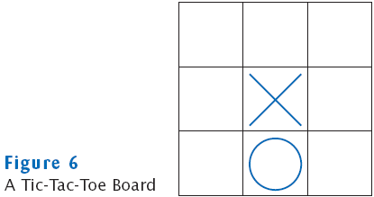
Traversing Two-Dimensional Arrays
It is common to use two nested loops when filling or searching:
for (int i = 0; i < ROWS; i++)
for (int j = 0; j < COLUMNS; j++)
board[i][j] = " ";
File TicTacToe.java
File TicTacToeTester.java
Output
| |
| |
| |
Row for x (-1 to exit): 1
Column for x: 2
| |
| x|
|
Row for o (-1 to exit): 0
Column for o: 0
|o |
| x|
| |
Row for x (-1 to exit): -1
Self Check
- How do you declare and initialize a 4-by-4 array of
integers?
- How do you count the number of spaces in the tic-tac-toe board?
Answers
- int[][] array = new int[4][4];
int count = 0;
for (int i = 0; i < ROWS; i++)
for (int j = 0; j < COLUMNS; j++)
if (board[i][j] == ' ') count++;
Copying Arrays: Copying Array References
- Copying an array variable yields a second reference to the same
array
double[] data = new double[10];
// fill array . . .
double[] prices = data;
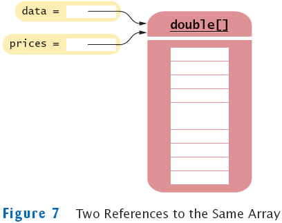
Copying Arrays: Cloning Arrays
- Use clone to make true copy
double[] prices = (double[]) data.clone();
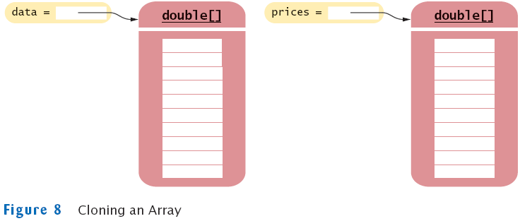
Copying Arrays: Copying Array Elements
System.arraycopy(from, fromStart, to, toStart, count);
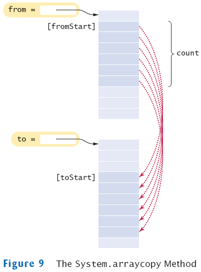
Adding an Element to an Array
System.arraycopy(data, i, data, i + 1, data.length - i - 1);
data[i] = x;
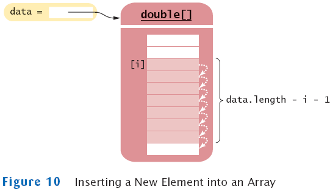
Removing an Element from an Array
System.arraycopy(data, i + 1, data, i, data.length - i - 1);
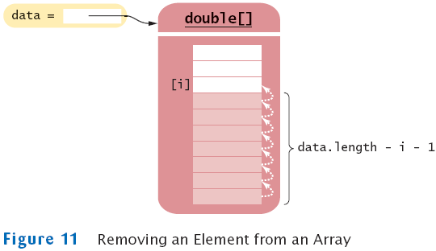
Growing an Array
- If the array is full and you need more space, you can grow the
array:
- Create a new, larger array.
double[] newData = new double[2 * data.length];
- Copy all elements into the new array
System.arraycopy(data, 0, newData, 0, data.length);
- Store the reference to the new array in the array variable
data = newData;
Growing an Array
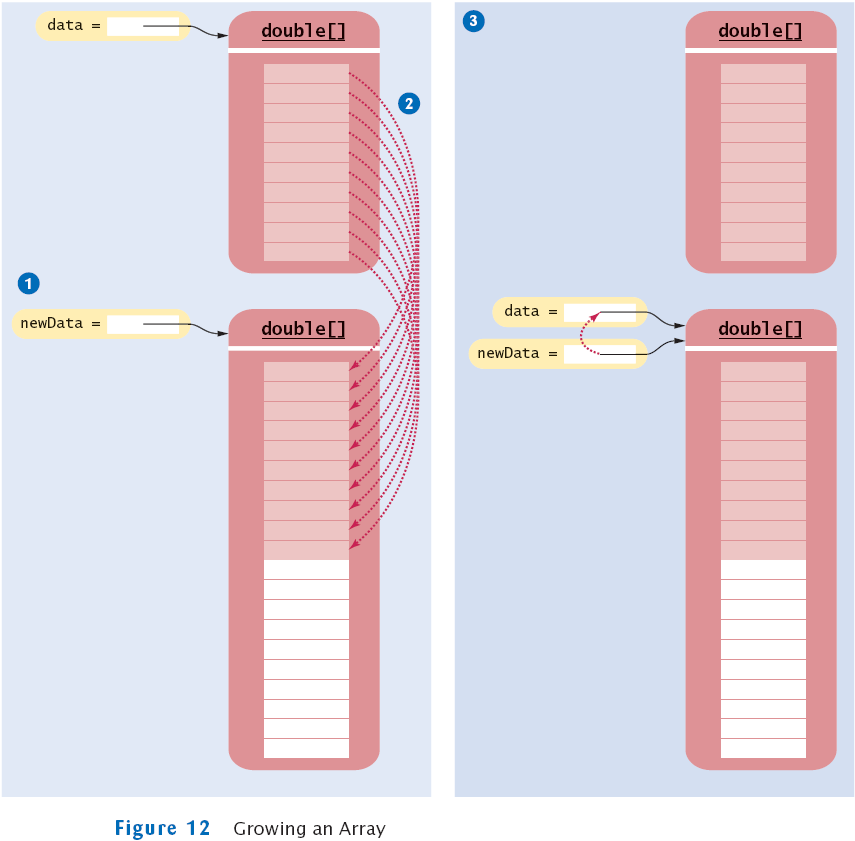
Self Check
- How do you add or remove elements in the middle of an array
list?
- Why do we double the length of the array when it has run out of space
rather than increasing it by one element?
Answers
- Use the insert and remove methods.
- Allocating a new array and copying the elements is time-consuming. You
wouldn't want to go through the process every time you add an
element.
Make Parallel Arrays into Arrays of Objects
Make Parallel Arrays into Arrays of Objects
- Avoid parallel arrays by changing them into arrays of objects:
BankAccount[] = accounts;
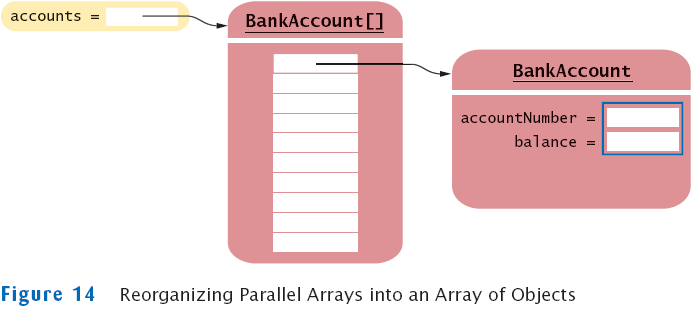
Partially Filled Arrays
- Array length = maximum number of elements in array
- Usually, array is partially filled
- Need companion variable to keep track of current size
- Uniform naming convention:
final int DATA_LENGTH = 100;
double[] data = new double[DATA_LENGTH];
int dataSize = 0;
- Update dataSize as array is filled:
data[dataSize] = x;
dataSize++;
Partially Filled Arrays
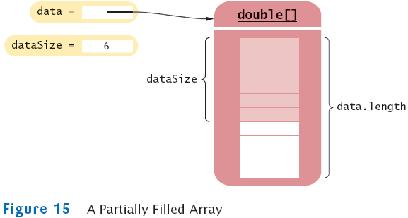
An Early Internet Worm
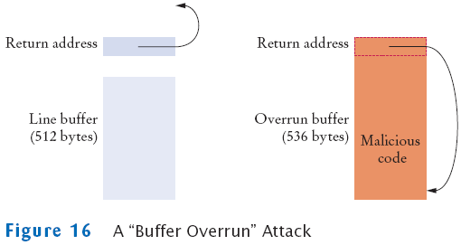